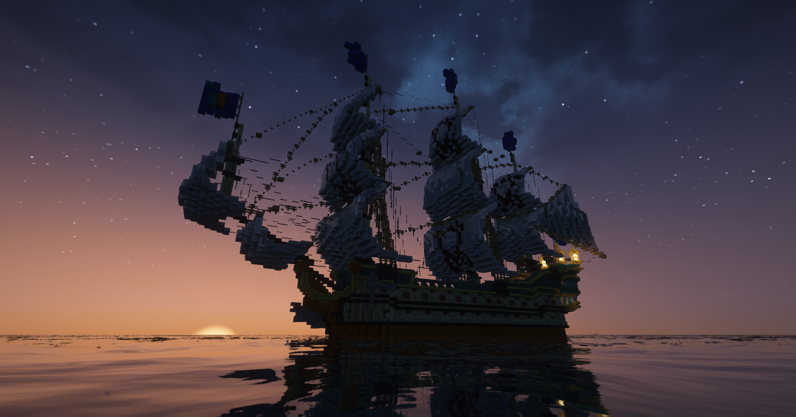
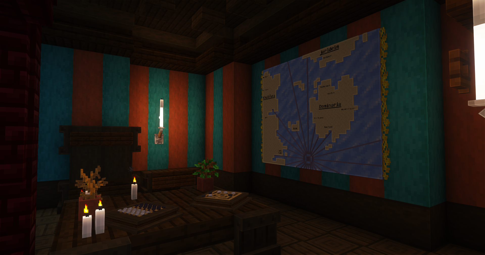
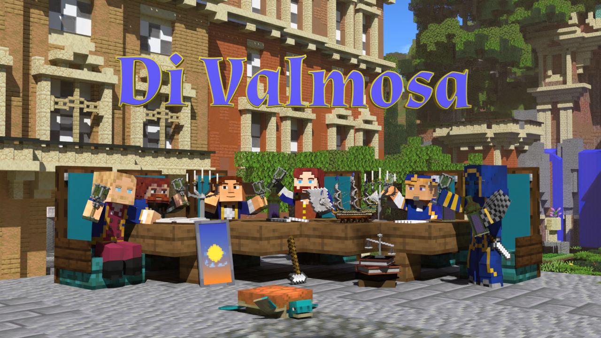
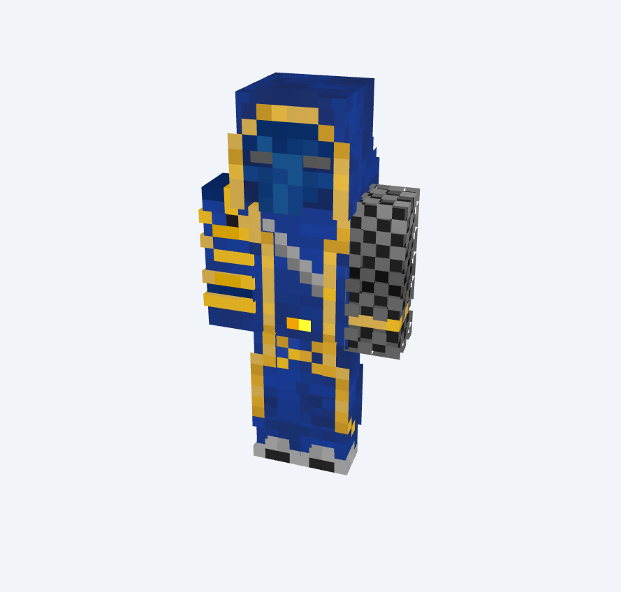
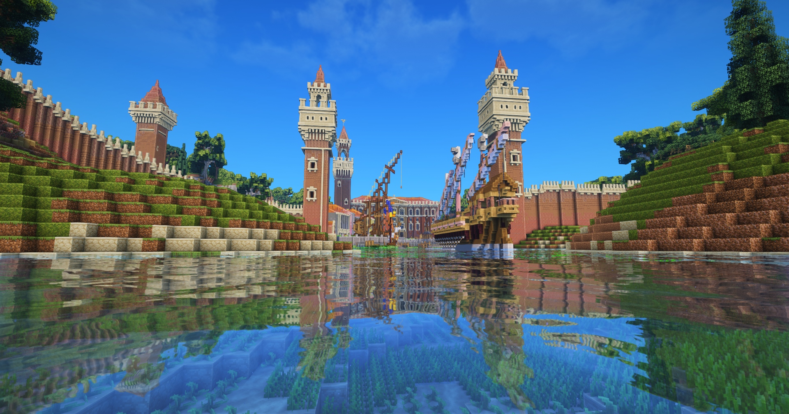

Navire Principal De la Maisonnée "l'Anapsida" qui permit au membre fondateur d'atteindre l'île de leurs rèves

La Maisonnée Valmosa, pilier d’honneur et d’exploration

Les figures fondatrices de la maisonnée

Sir Aurelio, naturaliste et observateur du vivant

Odal l’Éternel, stratège enveloppé de mystère

Entrée Principale du port de la Maison Di Valmosa